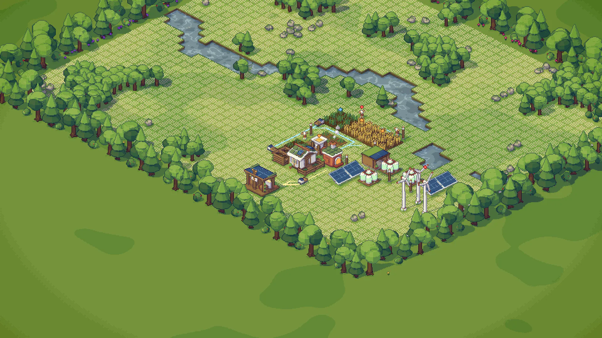

1
2
3
4
1
2
3
4
Truck 2to the depot · 12 bread · 0:22
Morning Bread64 / 150 bread · 13:00 of 35:00
On the map
Bread run, loadedempty
Feed loop, loadedempty
Pale lines are the roads overlay · cycles
Routes
2 routes · 3 trucks
Bread run
4 stops · 2 trucks
19.5 /min
1
Field silo010 s3060
DropPick up
2
Mill0 s103060
DropPick up
3
Bakery0 s103060
DropPick up
4
Freight depot0 s103060
DropPick upnothing
+ Add a stop · 4 of 8tap a good to switch it · wait
Between trucks
1:50 at the slowest stop
Measured over the last 10 minutes. Between trucks: the average gap between arrivals at the stop that waits longest. Idle: time spent waiting at stops.
Feed loop
4 stops · 1 truck
7.8 /min
bran→
manure→
compost
Between trucks
4:10 at the slowest stop
Garage · 3 of 4 bays · 20 Wslower at night